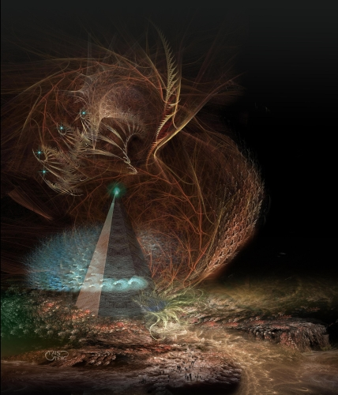

And the Sky is Filled with Eyes (Part 1)
by
Tais Teng
"I saw a white star all ablaze
and gladly would have lingered
but I have promises to keep
and light-years to go
before I sleep."
—attributed to Great-Captain Frost, discoverer of Starholm, 20,693 AFR
(After the Foundation of the Redoubt)
Gossil, age 9
"Name the six worlds of Starholm," the teacher said and Gossil was the first to raise his hand.
"There is Yal-bin-Armanth, ser. Out among the comets. It's all oceans and icebergs. The people live on rafts of seaweed and ride improved sharks. Next to the sun lies Ferno, with lakes of lead and sulfur. The cities are underground and the Fernos look ever so pale and white, like mushrooms. The..."
"I see you did your homework. Good." The teacher pointed. "Now Yaleena will tell us about their capital world."
Yaleena sat bold upright. "Sorry, ser. My aunt had a baby. I had to help my mother with the birth-muffins." She smiled. "It was human, ser! Its DNA came up as green as grass!"
"Congratulations. Yes, a new baby is more important. Starholm will still be there tomorrow. Gunnar? The capital world?"
"Nue Fusang has a thousand islands and..."
Gossil sat fuming. 'I see you did your homework.' I could name all Starholm worlds before I was five. He balled his fists. When the Ship launches I will be standing at the helm. Great-Captain Gossil. I'll see the Perfect Worlds with my own eyes.
"Great-Captain Frost said in the poem: And gladly would have lingered. Now, why didn't he?"
"I know that, ser!" Yaleena cried. "There was that other scout-ship, with his wife. It was falling in the black hole that Starholm orbits."
"And?"
"He didn't save her, but he tried. The black hole took them both. They are still falling because time stops at the edge. They will be falling forever."
She smiled like it was something beautiful, Gossil saw. Stupid girl. Real heroes don't fail. When Frost went down, he sent that poem, not the coordinates of Starholm. It took another five thousand years to find Starholm again, and all because of a woman.
I will do what is right, he decided. I won't get all squishy when a girl hands me a fruit of the darling-vine or puts a flower in her hair. He glanced at Yaleena. Her curls were a glowing verdigris, with the red yellow of copper at the roots. She was of pilot stock: made to live in space. The moment she became weightless her hair would knit itself in a space-helmet, shielding her brain from radiation. She would be the perfect wife for a star-ship captain, but not if she kept cooing about babies.
He must have spieked too loud because he suddenly heard Yaleena night-whispering in his brain.
"You are so stupid! I'd rather kiss a plow-ape or give my fruit to a..." Her thought sputtered out: she was clearly unable to think of something worse than Gossil.
When Gossil came home his aunt Fayima was sitting under the hearth-lamp with his mother, nipping a pale green liquor. Gossil had tasted it himself once in the kitchen: Asperol was horrible, bitter and sour at the same time.
Now Aunt Fayima was all a woman should be: as Niketria she commanded a hundred companies and even those brand-new Censors deferred to her. As the old saying goes: it takes a man to fight a battle, but a woman to win a war.
"Hai, Gossil. How is life?" She turned back to his mother without waiting for an answer. "Now as I was saying, we drove them back all the way to the lake. Our fliers were like hawks, swooping down on them and then the manshonyaggers took them in the left flank."
"You said they were completely silent? Didn't scream a single battle cry?"
"They are something new and very hard to kill. We only got their giants and night-hounds. I tried to spiek to them, but they were mute there, too."
"They are from the shadows." His mother shrugged. "Mad. Even if they talked it would be gibberish. Did they have human allies?"
"Wild men and giants. I wouldn't exactly call those human."
Gossil took a ripe mango and sat down next to them.
"Why are they always attacking our Ship, Aunt Fayima?"
"Well, the giants and wild men would like to eat our flesh. They are into it for the meat, eh? And the others, the pneumavores, they want to devour our souls." She spread her hands. "To them we are like a thousand gardens full of succulent fruit while they hunger in the twilight. Impossible to ignore."
"So why don't they dig their own Fields?"
"Hunters don't plow." She pursed her lips. "I just heard something from the Watch-tower that might interest you. The final star-ship is returning. The Pale Rose, piloted by captain Schea. A dozen years at most before she lands."
"And then we have lift-off! The teacher said the Ship only needs one more drive."
"Don't forget the hull metal, the adamant. The Watch-tower isn't armored yet and you wouldn't want the Great-Captain to breath vacuum."
"When we go, how about the Underground Fields? I mean, even in space we still have to eat."
"Well, we take the Fields right along with us. The gardens are walled against burrowers, part of the Ship. Below the gardens there is a kind of bowl of adamant. An upside down bowl. We still have the nuclear bombs our ancestors used to carve the roads. You explode them below the bowl, the push-plate, and the ship is torn loose from the bedrock, flung into the air. It goes right into orbit and there we can activate the star-drives."
"We have bombs? Why didn't we ever use them against our enemies?" Atomic bombs were the stuff of legends, like enchanted swords. He had thought the art of making them long since lost.
"Atomic bombs are kind of self-defeating, like a diskos without a handle. An explosion leaves the land poisoned for centuries, quite uninhabitable." She nodded. "The launch will incinerate half the Bight, but then, we won't be living there anymore."
Gossil felt his stomach clench. But we are not the only humans here. Even the wild men were once Road-Makers. And then he understood, truly understood for the first time in his live: it takes a woman to win a war. Only a woman thinks her children and her home more important than any notions of valor and honor. Only a woman knows that survival is paramount. I am glad I am not the Niketria.
"The captain of the star-ship, she sent a message?"
"The ansible chimed for the first time in a thousand years. You can use a faster-than-light sender only once, you know. Then the paired-electrons have broken symmetry, so we couldn't answer."
"She sent a picture?"
"Yes. Of about ten seconds, before she went into cold-sleep. You want to see it? By the way, her name is Schea. Captain Schea."
Schea. Like the first Gossil's wife. It must be a sign.
"Yes," he said. "Yes, please."
The Watch-tower was open to the very thin and extremely cold air so they had to wear hot-suits and face-masks. Below stretched the Bight, with hundreds of villages and circular mushroom fields. Fumaroles steamed and there were a dozen of glowing lakes.
In the distance the Valley turned, opened out into the Shadow Lands. Above it all the swollen sun hung, the brooding red of a fading ember. To Gossil's eyes the world was quite bright, though. Humanity had upgraded itself long ago and his eyes saw well into the infra-red. The whole valley was bathed in a clear ulfire and he noticed a hundred distinct tints of red.
Fayima pointed down. "You see that peak there, that looks like a crouching man? That is where we sent them running yesterday." She took his hand. "Come. I'll introduce you."
"What do you mean?"
"Captain Schea sent us her soul-print. You can talk for about ten seconds with her before she resets herself."
The woman was lean as a night-hound, not a single ounce of fat, but the captain didn't look fragile at all. Her hair formed a gleaming green cap. Such strange eyes, as green as her hair, with huge pupils.
"And who do we have here?" the woman said. She had an easy smile, but she spoke to him as if Gossil was a child. Which sadly, he still was.
"They call me Gossil, sera."
"Nice name. A famous name even." Her smile grew broader. "It sounds familiar, somehow. Can you make it true?"
I have only seconds left before she resets! What can I say?
"I am going to be the Great-Captain of the Ship," he blurted. "And I am going to marry you!"
"Well, how about..." The woman faded to black and white and then sharpened again. "And who do we have here?"
He turned his face away, feeling like the perfect fool.
"I..."
His aunt chuckled. "It is a bit early perhaps, but it is always good to know what you really want."
She took him by the elbow and steered him to the elevator. "And it isn't as if the real captain Schea will remember what you said."
Gossil, age 12
In their twelfth year all children had to work for seven months in the Underground Fields below the Ship. It was only after you had dug the ground with your very own, blistered hands and saw the seeds come up to be devoured by greedy black bugs, that you truly understood where your food came from. After a stint in the Fields a boy would never look down on an algae-farmer or a butterfly-shepherd again.
The Underground Fields were lit by a thousand dazzling lamps and much brighter than the outside. They seemed limitless to Gossil, fading into a pastel haze. There were clouds of butterflies with wings like stained-glass, wasps the size of his thumb. So many wonders but right now Gossil didn't care. He was walking with his best friend Chun along a construction pit and something was wrong. Horribly wrong.
"This shouldn't be there!" he said to Chun. "They shouldn't be digging a new level! The Ship is finished, except for the last star-drive. Anyhow, digging should be impossible." He leaned across the balustrade, peered down. "Look at that! It goes down for at least a mile."
"So?"
"Just below the Fields there is the push-plate." How had his aunt described it? "A giant bowl of adamant. An upside-down bowl. It is the engine that is going to lift the Ship."
"I am sure I don't know what you are talking about. Why don't we ask that foreman?"
"We have thirty more levels to dig after this one," the foreman said. "And that is only for this century. Also, don't forget the new Thermoelectric shafts. They go down another hundred miles. We can't depend on the reactors forever, eh? They'll run out of helium 3 in another thousand years. Tapping the Earth Current is so much safer." He reached into the air and unrolled a virtual map. "Right here is where we are standing."
Their present level was sharp and extremely detailed: if Gossil zoomed-in he probably could see himself and Chun talking to the foreman. The Thermoelectric shafts went down all the way through the crust, then spreading out, rooting the Ship like a tough desert brush.
"But the push-plate? How the hell is the Ship going to launch?"
"Me and my comrades, young ser, we dig holes. I think we dig them quite well, but that is all. Sorry. Can't help you."
The rest of the class sat around the campfire, talking or carving fetish-dolls from corncobs. Gossil didn't even pause for a cup of soup: he stalked across the parking lot with electric tricycles and walked straight into the elevator.
The Grand Library on the twenty-ninth level was something of a cross between a museum and a garbage belt. Never go digital if you are archiving for eternity: ninety-nine percent of all information here was encoded in an obsolete format and as unreadable as chicken-scratches. Modern librarians carved tiny, millimeter high letters in diamond disks or used talking holograms. No matter how deep civilization fell the next time, people would still be talking and a magnifying glass isn't exactly high-tech.
"Ah," the guard at the entrance said, "our next captain." The mansonyagger had three heads on flexible necks and would have looked comical if those heads hadn't terminated in poisonous stinger-tongues and razor sharp teeth. The flayed faces hanging from his girdle probably weren't real: not with all that blood still dripping.
"What do you mean?"
"We are machines. Our eyes look out from every camera. Especially from those on the Watch-tower." All his lenses grew bright and Gossil heard a soft clicking. "I have recorded you now. Children a thousand years from now will marvel at your portrait. The famous captain Gossil, come to visit the Library. It will remind them that even heroes have to study."
"Famous captain. You are so funny."
"Use the side entrance. Librarians are a fastidious lot. They don't like twelve-year-old boys with dirty fingernails and clay under their sandals touching their precious books."
"All right." That seemed good advice and he went to the little service door that suddenly swung open.
"And, Captain Gossil? Give my regards to your wife." He sniggered. manshonyaggers were horrible know-it-alls and the trouble was that they were invariable right.
Gossil had to hide two times behind bins of fossil memory-sticks before he found an unoccupied kiosk.
"Give me your thumb," a soft voice whispered right into his brain. "Prove that you are no abomination."
A face appeared on the screen. It was, of course, Gossil's own. All Artificial Intelligences were tricksters, with a very strange sense of humor.
Gossil put his left thumb on the reading-strip.
"Got it. You are human. At least what they call human nowadays. When I was first programmed they would consider you a freak, with those big goggle-eyes and no small toe." The face became a leather-bound book. An invisible hand riffled the pages. "Now what is it you want to know?"
"My aunt, she told me that the Ship will be launched by a series of nuclear explosions."
"Yes, that is the consensus. I find half a million references to..."
"I don't want references. They are all lies! There is no push-plate below the Fields. Nothing to lift the ship."
"You seem to be right. I scanned the building plans and below the Fields lies only bedrock. As for the bombs, I can't find a trace of them."
"My aunt said our ancestors used them to carve the roads."
"They had lasers for that, chemical explosives. A hundred other devices that gave a quite satisfactory bang. Atom bombs would be quite counterproductive: you would sicken and die if you walked a radioactive road. Also, the last minable uranium and thorium have been used up or degraded into lead ages ago.
"I am so sorry but that information is restricted. Not yet for your eyes." The mansonyagger filled the doorway of the kiosk. The yellow light in the center of all three heads showed that it was in combat-mode.
Gossil suddenly felt very tired. "That was restricted information. And now you kill me? For the greater good of all?"
"Don't act so dramatic. Not yet for your eyes, I said. Though I will have to kill you if you talk about it with your friends. And your little friends, too." One of the heads, swiveled, eyed the screen. "You understand that, too?"
"Nobody asked me nothing about any atom bombs, ser!"
The screen became dark.
"Good. The world is wide, my Gossil, and while we can't mine the thunder metals there are others who can. Many abhumans are as clever as you and even adamant can't stand a teraton explosion."
"There aren't Road-Makers, only savages out there," Gossil protested. "They don't do high-tech."
"Atomic bombs aren't high-tech. They are only one step above a stone hand ax or a kalashnikov. You could put one together in an afternoon." Above his heads two half-spheres of a lustrous gray metal came together and turned into a miniature sun. "You see? As easy as making a mud pie. By the way, my name is Scourge of Heretics. We'll probably meet again. I am a kind of counselor for your aunt."
"Where have you been?" Chun asked when Gossil crept into his sleeping bag. "You missed most of the fun. Hurinn drank a whole bottle of Thunder and tried to kiss Yaleena. She threw him in the pond and then had to jump in after him when he went down like a brick."
"And now?"
"Hurinn will be very ashamed in the morning, and feel like a sick cockroach. But I think that Yaleena will kiss him in the end. I mean, she could have let him drown."
Gossil felt a strange pang at the idea of Yaleena kissing anyone. He pushed the thought away: he knew whom he would love. When the starship set down he would be just the right age. The captain would be thirty at most and he twenty, twenty-one. In the sagas the heroines often liked to take younger lovers. Think of Lady Ran or Lurella of the Road-Makers. Gossil smiled and closed his eyes.
.
"Hey, you?" The night-voice spoke right into his brain and Gossil looked up. A girl was standing next to the cork tree he had been stripping of its bark, with her hands on her hips. She was barefoot and none too clean.
"Yes," she said, "I am a traveler, a wilding. I talk with trees and dead people."
There were people down there who never settled down in a single village, Gossil knew. They trekked across the Fields, driving their herds of giant cicadas, brewing their brandy from poisonous mushrooms and yellow lichens. It was whispered that they remembered thousands of former lives, going back all the way to the yellow-sun times.
"That is right," the girl said. "Thousands of lives."
"It is very impolite to stomp around in a stranger's mind."
She smiled, and it was a very insolent smile, superior. "But you are no stranger. You are the great architect Gossil. The one who started building the Ship." She pursed her lips. "Or so you say."
"Get out of my head!"
"Wouldn't you like to know if you are truly his incarnation?"
He didn't have to voice his answer. His whole body became taut, stiff as a board.
At first it had been a kind of game only. My name is Gossil, so wouldn't it be nice, a great joke if I really was his incarnation? Later it had become important, no longer a game, but a part of the story every human tells about himself. I am Gossil. I will fly the ship I started constructing so long ago!
"I have a flagon of Dark Asphodel here. You can remember all you have been." She opened her hand: the flagon was so tiny it couldn't have contained more than a single sip. "I see you have been hoarding pieces of adamant. I want all of them."
"How do I know that your magic potion works? That it wouldn't just make me fall asleep?"
"You don't know. But you'll never have a chance like this again. We don't like sharing with a stranger but I need six adamant coins. There is a boy I fancy and he is too poor to pay my bride-price..."
"All right. You don't have to tell me."
"All your lives in exchange for a few wafers of hull material. What do you need them for? You'll captain a whole six mile high ship made of the very same stuff."
The coin were so thin as to be translucent. All adamant had been mined on neutron stars that had stopped rotating. Even the smallest coin would have been impossible to lift, the weight of a mountain, but the adamant had partly been rotated in one of the hidden dimensions, shredding most of its inertia and mass. He handed them over.
"Make all the babies you want. I'll fly to the stars."
"Everybody to his own."
The Dark Asphodel tasted so nasty that it must be the real stuff. He gagged and shuddered, but kept it down.
"Close your eyes," she ordered. "Wander across the years."
Gossil was suddenly an old man, dying on a bed of stinking rags. Several members of his starving family eyed him and he knew the would eat him when he was dead, tear the raw flesh from his bones. The sun stood high in the sky and was closer to orange than red. Great flames leaped from her surface.
The time when the cities were always moving West, he thought. I went too far back: the construction of the Ship hasn't been started yet.
He closed his eyes and now he was a baby. Gossil tried to focus and there was a sky above him. A red sky. I am closer but I should have seen the ceiling of a city, darling trees, hovering hearth-lamps.
The next vision brought him impossibly far back, a white capped ocean under dismal gray heavens. A derelict ship was wallowing in the waves. Things crawled across the spongy hull, eyeless things with the flesh rotting from the bones.
No, no. Show me the Ship! My own ship!
A red sky and the sun pinned like a bleeding butterfly. There was the Ship finally. The very start of the construction: no more than a dozen half-dismantled star ship hulls. He was standing in front of a huge crowd. Wide doors opened and a man and a woman stepped outside.
"Gossil!" he heard himself scream. "Lady Schea!" He lifted his hands, waved. Gossil felt such a deep joy, a trust so profound it made him almost weep. The Architect walked past him, the Captains of Captains and he didn't look in the slightest like his pictures, or, what was more important, like Gossil himself. There was always a conservation of essential character, of body shape across the incarnations. This Gossil wasn't athletic: he seemed like a nice uncle, smiling and pot-bellied. Not a leader but someone you would really like to trust.
Gossil opened his eyes, this time his real, here-and-now eyes.
"Such a pity," the wilding girl said. "so you aren't him after all."
"It doesn't matter," Gossil said. "He is the fake. The false Gossil. I'll be the Great-Captain he never was!"
When he looked back at her she had vanished. Gossil snorted: more traveler magic. He wasn't interested: he now knew who he really was. Playing Gossil would make his whole live a splendid performance, the best of all games.
Gossil, age 16
"I got rid of my chaperon," Yaleena said. She lifted her face. "Kiss me."
With her green hair she looked every inch a space-born, a star ship captain. From the corner of his eyes Gossil saw a darling vine fruit lying on the floor. Yaleena must have dropped it. A vine-fruit was the offering every virgin would hand her true love, her intended. He gazed in her eyes and they were the same color as her hair. She must be wearing contact lenses: her eyes had never been green before.
"Kiss me." She didn't call me "Laheesh", "Love of my life", Gossil thought. She didn't give me the fruit, even if she plucked it. He didn't for a moment believe that she had dropped it incidentally.
"People are looking at us," he whispered.
"So what? Let them look!"
And then he understood. Yaleena wants everybody to see us kissing. No, more exactly, to see Yaleena kissing me, a boy. Yaleena was one of the last five left in her girl-band. Most of the others had found lovers or at least patrons.
Yaleena likes girls.
It didn't matter. Not with her body so wonderfully exotic and her eyes as deep as space itself. And it wasn't as if he was doing something wrong, something ugly. Three cities up women married women, carved love-songs in the bark of darling-trees. Only in our own city the aunts are obsessed with chastity, with the whole wife-and-husband thing. It would be a scandal: Yaleena giving her chaperon the slip and smooching with a boy. But the right kind of scandal.
He kissed her, held her. She took his arm, led him behind a tree.
"You may touch my breasts. If you want."
It wasn't a sheltered place at all. They were still visible from half the balconies. He stood behind her, lifted her breasts and their weight made him shiver. It was as if he held the most precious treasures on Earth. It is all a lie, but it feels so good.
They didn't go "all the way", to use that nine-million-year-old expression, and Yaleena probably never would let him. It didn't really matter. Other girls would see him walking with fair Yaleena and, of course, her best girl-friend. Those who have, will be given more: girls liked boys who already had a girlfriend the best. This way everybody won.
"That Yaleena," his mother said two weeks later. "I hear some strange things about her. She is a wild girl."
"I know," Gossil said.
"I don't mean other boys."
"Believe me, I know."
They locked gazes and there was exchange of information, an exchange that wasn't like night-thoughts or spieking at all.
"I see," his mother said. "If it is girls, it is almost tolerated. It isn't like it is something unnatural."
And Gossil knew that she really understood, that she wouldn't mention it again. So he didn't have to send her that memory, from the time he was five and he had seen his mother and Aunt Fayima kissing. Not kissing like two people greeting, but kissing for a long, long time.
To And the Sky is Filled with Eyes (Part 2)
Image and story © 2011 by Tais Teng.